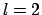
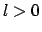

Research Statement
MASUDUL HAQUE
December 2005, Utrecht
This statement was written in December 2005. It
summarizes my research interests and the status of my various projects
at that time. Please keep in mind that, with time, research interests
move up or down in priority, projects get finished or abandoned, etc.
I am interested in studying quantum many-body phenomena in systems
that display quantum coherence or collective phenomena. These include
solids, trapped atomic gases, artificial structures like quantum wells
and dots, etc. About half of my condensed-matter work has been in the
context of trapped ultracold atoms. However, my background and
perspectives are heavily influenced by the
strongly-correlated-electrons community, from my Ph.D. training at
Rutgers as well as from most of my collaborators.
During the last three years, I have worked on a diverse set of
problems with the idea of learning a broad spectrum of
condensed-matter physics. At any point of time, I usually work
actively on one cold-atoms project and one correlated-electrons
project, together with other ideas and discussions maturing in the
background. Working on several topics simultaneously, I find it a
rewarding experience to be able to make connections between disparate
topics. I would like to continue to work on problems in both
correlated-electron and cold-atom contexts.
Below I list and briefly describe some of my research efforts. More
elaborate descriptions are provided in an separate report (titled
Detailed Research Description).
Listed below are projects I am working on right now. The first two
are close to being written up for publication.
- Asymmetric fermion pairing:
With H. T. C. Stoof (Utrecht), I have been working since September
2005 on BCS-like pairing in Feshbach-resonant trapped fermions with
unequal species populations (``magnetized'' fermions). Our aim is to
quantitatively explain aspects of ongoing experiments in the group of
R. Hulet (Rice Univ.). The issues being addressed are: (1) phase
separation in traps; (2) various pairing schemes for unequal-density
two-component fermions, such as the Fulde-Ferrel-Larkin-Ovchinikov
(FFLO) state and its competitors.
- Pomeranchuk instabilities:
With Jorge Quintanilla (Rutherford Lab, U.K.) I am examining
two-dimensional fermionic models which produce shape-distortion
(Pomeranchuk) instabilities of the Fermi surface in the

channel.
Our finite-temperature phase diagram contains a transition of the
Kosterlitz-Thouless type and a crossover at higher temperatures,
corresponding respectively to the disordering of phase and amplitude
degrees of freedom.
- Entanglement in fractional quantum Hall and
Affleck-Kennedy-Lieb-Tasaki (AKLT) states:
With Kareljan Schoutens (Univ. of Amsterdam), I am calculating the
entropy of entanglement in fractional quantum Hall states. We have
identified the entanglement entropy of full-graph AKLT states as
a route to understanding the entanglement in fractional quantum Hall
states.
Next, I list some work I already published or put out a preprint on.
For some of these I have plans for followup or spinoff calculations.
- Dissociation dynamics near Feshbach resonances:
With Henk Stoof, I studied dissociation dynamics of molecules as the
magnetic field is ramped to the side of the resonance where they are
not stable. Published in Phys. Rev. A.
- Designing a non-relativistic "superstring" using
cold-atom technology:
With Henk Stoof, one of his PhD students, and a string theorist, we
proposed a method for creating a three-dimensional non-relativistic
version of a superstring, using the ultracold-atom toolbox. Published
in Phys. Rev. Lett.
- Ring-shaped luminescence in laser-excited quantum well by
laser excitation; diffusion-reaction dynamics:
I submitted a thorough quantitative analysis of the basic
diffusion-reaction equations governing the electron-hole dynamics in a
luminescence experiment. My studies of this model started with Phil
Platzman (Bell Labs) when I was in New Jersey, and later I continued
by myself in Utrecht. Under review for Phys. Rev. B;
cond-mat/0507058.
- Wigner crystal structure:
As a Ph.D. student, I took the initiative to start a research project
with two other Ph.D. students, independent of our advisors. We
predicted a structural phase transition of a Wigner crystal of
electrons held on a liquid helium surface by a pressing electric
field, due to surface deformation effects. Published in Phys. Rev. B.
- Weakly interacting Bose gas:
This was the topic of my Ph.D. work with Andrei Ruckenstein (Rutgers).
I worked on: (1) the effect of the repulsive interaction on the
condensation temperature; (2) the presence of squeezing (in the
quantum optics sense) in the zero-temperature condensate.
There are a number of things I have tentatively started, which are
still at the reading/discussion stage or at the stage of toy
calculations. Some of the following are elaborated further in attached
Detailed Research Report.
- Writing non-equilibrium DMRG code:
With the recent development of a time-dependent DMRG algorithm
and the abundance of non-adiabatic low-dimensional problems in the
cold-atoms context, I found it tempting to try to have my own DMRG
code. This is too big a computational project to try by myself, so I
was lucky to have an Amsterdam Ph.D. student (R. Hagemans) agree to
collaborate and do most of the coding. Some toy code is posted at
http://www.phys.uu.nl/~haque/DMRG/
.
- Laser-pumped non-equilibrium electron-hole system:
As a re-examination of some steady-state calculations I had done while
I was in Rutgers, I am starting on a non-equilibrium (Keldysh,
real-time) Green's function calculation for a laser-pumped
electron-hole system. The issues are: (1) relaxation into
steady state; (2) the validity of treating the steady state using a BCS
ansatz in a time-rotated frame; (3) the effective temperature and
coherence (condensation ) of the steady-state pumped non-equilibrium
electron-hole system.
- Solitons in elongated (quasi-1D) Bose condensates:
(1) With a former Utrecht postdoc, I have been learning about exact
solitonic solutions of the time-dependent one-dimensional
Gross-Pitaevskii equation, with time-varying interaction strength.
(2) With a group in my home country, I am participating in a long-term
project that will start with studying soliton modes in two-component
Gross-Pitaevskii equations.
- Further aspects of asymmetric pairing: With M. Parish
(Cambridge, U.K.) and separately with I. Paul (Argonne, IL), there
are plans for calculations on FFLO and competing pairing schemes.
To summarize, my past/current work includes problems motivated by
cold-atom experiments (asymmetric fermionic pairing, non-equilibrium
dynamics, rotating Bose gases), several condensed-matter models
(models leading to Pomeranchuk instabilities, electron-hole system in
laser-excited semiconductors, interacting Bose gas, Wigner crystals),
and quantum states (fractional quantum Hall states, AKLT states).
Common themes in my study of different models include:
- Quantum ordering in unconventional channels, such as Pomeranchuk
instabilities in

channels, and asymmetric fermion pairing with
finite momenta (FFLO) or via Fermi surface deformations;
- Non-equilibrium phenomena, e.g., non-adiabatic evolution in cold
atoms, steady-state pumped electron-hole system, time-dependent DMRG,
soliton solutions in time-dependent 1D Gross-Pitaevskii equations;
- Density matrix techniques (DMRG, entanglement).
During the past three years, I actively pursued and organized fresh
collaborations, and did not hesitate to start work on new topics. At
this moment, I am happy to concentrate on the projects I have already
started, and probably will not start on new problems before I reach my
next location.
In the coming two or three years, I hope to continue to work on
problems motivated by disparate condensed-matter contexts, e.g.,
correlated-electrons systems, cold atoms, optically excited
semiconductors, etc., as well as formal theoretical models. The
topics I will give priority to, of course, will depend on the
interests of my next postdoc institution.
Developments in recent years, such as innovative experiments and
proposals with laser-cooled atomic systems, measurements in newly
synthesized nanoscale structures and solids, and theoretical
developments such as merging of concepts from quantum information and
quantum optics, all ensure that condensed matter remains a dynamic
field with many challenges for theorists. I have found it an exciting
experience to be investigating many-particle phenomena during these
last years, and I intend to continue and extend my studies of
correlated matter.
M. Haque
2006-01-21